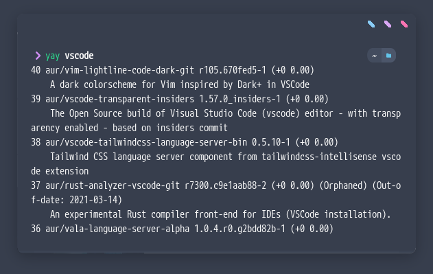

Sinceramente estoy cansado de esos Shitpost donde hacen clickbait con cuáles son las mejores distribuciones de linux y hacen mención de las “más populares”. Pongo comillas porque no son realmente las más populares sino son solamente las que ellos conocen. Hoy voy a compartir mi experiencia. Cuáles son, PARA MI, las mejores distros de LINUX
La mejor (a mi gusto)
Archlinux
Archlinux, es para mí, la mejor opción de todas las que existen. Y mi justificación es simple. Elegís lo que querés instalar. Mucha gente le tiene “miedo” a Archlinux y esto es porque antes era una distribución difícil de instalar. Pero hoy en día, hay muchas guías en internet, algunas buenas y otras no tanto o confusas. Pero también la más confiable, que es la guía oficial de la Wiki de Arch.
Además en la última ISO, ya contamos con un instalador guíado nativo. No es obviamente un instalador con dibujitos, interfaz gráfica y botones que digan siguiente, siguiente, aceptar.
| PROS |
|---|
| Instalas solamente lo que querés, tenés la opción de instalar los paquetes necesarios. No más, no menos. Lo necesario. Otras distribuciones vienen con muchos paquetes que nunca vas a utilizar, con drivers o librerías que no necesitas ni corresponden a tus drivers. |
En Github encontras buenos scripts para instalar. Inclusiva hay scripts para instalar solamente el desktop, la base. También está el instalador guiado. Ya no es sumamente necesario instalar todo con los comandos. |
En el camino aprendes. Esto nunca está de más. Si te sobran 30/40 minutos, podes utilizarlos para aprender qué es lo que hace la instalación de un Sistema Operativo como Linux. Yo sé que es super fácil darle click a siguiente e instalar todo sin “problemas”. Pero nunca vas a aprender cómo y qué está haciendo ese click. |
AUR. La forma en la que instalas aplicaciones. En otras distros tenés opciones “nuevitas” como snap, appimages y flatpak. Sin embargo, AUR es muy simple. Basta solo con escribir en la terminal (esto depende de qué AUR helper utilices: yay, paru, trizen…) yay vscode y una busqueda comienza y te indica todos los paquetes y aplicaciones que existen. |
| No tenés software ni paquetes corriendo en el background. Por ejemplo, mi pc no tiene bluetooth, por ende yo no instalé ningún driver ni servicio para el bluetooth. Cuándo instalas otras distros, esto viene por defecto habilitado, y es necesario deshabilitarlo o desinstalar dichos paquetes, libs, drivers, etc. |

La más funcional (a mi gusto)
ElementaryOS
ElementaryOS no es mi opción favorita, pero es con la que mejor experiencia he tenido. Fácil de instalar, buena interfaz sin necesidad de configurar nada. Instalas y listo.
| PROS |
|---|
| Fácil de instalar. Esta es para mi la mejor característica. |
| No necesitas configurar nada. Instalas y listo, ya tienes todo para poder usar linux sin problemas. |
Las aplicaciones nativas son excelentes. No sé si la palabra excelentes es la correcta. Pero me gusta muchísimo cada aplicación que trae, y también las que puedes instalar desde la app store. Estoy hablando de apps creadas exclusivamente para Elementary. Un ejemplo es CODE. Me parece una app excelente! |
Cualquier persona entiende la interfaz y la forma en que se utiliza. He hecho la prueba. Cualquier persona entiende de buena forma Elementary. |

La más linda
Garuda Linux

Es una hermosa. No puedo decir más. Es una de las distros más lindas que he visto. Viene con multiples opciones pero me enfoco solamente en KDE, con ese blur hermoso, un wallpaper muy lindo, es bella. Una distro BELLA.
| PROS |
|---|
| Está basada en Archlinux. No tengo mucho para decir sobre esto. Si leyeron el principio. |
| Tiene AUR. |
| Viene configurada por defecto de una manera MUY bien cuidada |
| “Optimizada” para gaming y producción. Supuestamente, está optimizada de mejor manera para poder jugar y/o trabajar. (Digo supuestamente, porque particularmente no he notado mejor rendimiento.) |
| Trae un kernel y apps exclusivamente enfocados en optimización del sistema. |
La clásica.
Linux Mint.
Tengo que reconocer que, a mi gusto, es la mejor opción en lo que respecta a clasico, estable, y sencilla. Esta opción no suele fallar. Es conocida, no está super cargada de cosas y funciona bien.
| PROS |
|---|
| Fácil de instalar |
| Muy estable |
| Un diseño parecido a Windows. Con una barra muy similar a la de Windows. Cualquiera podría entender como usar la interfaz. |
| Es una opción buena para los que recién empiezan, no entienden nada y tampoco tienen ganas o tiempo para aprender. |
La mejor para “hackear”
Parrot OS
Herramientas útiles y una comunidad muy linda en español.
| PROS |
|---|
| Muy buenas herramientas |
| Muy buena documentación |
| Bastante bajo el consumo de ram y cpu |
| Una comunidad de las pocas en ESPAÑOL |
La comunidad está en telegram también. |
Ésta es para mi la lista de las mejores Distros de linux. Obviamente no tiene sentido escribir todas las que están buenas. Debian, Archcraft, blackarch… Son muchas. Espero que este post los inspire un poco a no irse por las comúnes. Sino más bien a investigar más profundamente, leer comentarios REALES, e intentar instalar una buena versión de Linux.